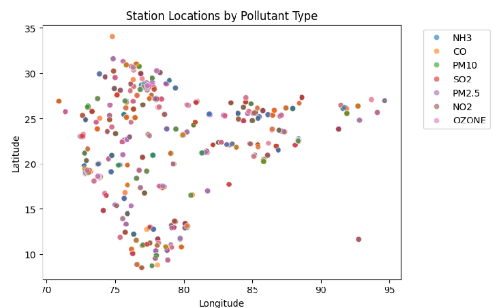
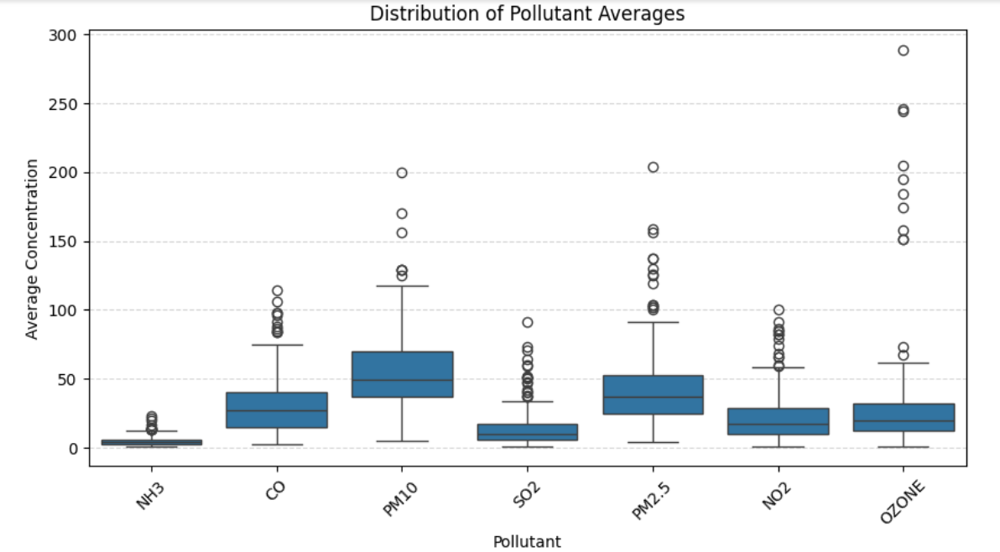

Station location analysis
Visual analysis of pollutant concentration trends across multiple monitoring stations to understand real-time air quality levels and city-wise pollution patterns.

Distribution Analysis
Box plot visualizing pollutant concentration distributions across cities — identifying outliers and spread.

Top 10 Most Polluted Cities
City-wise AQI bar plot highlighting the most polluted urban areas based on average AQI values.